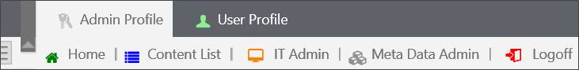
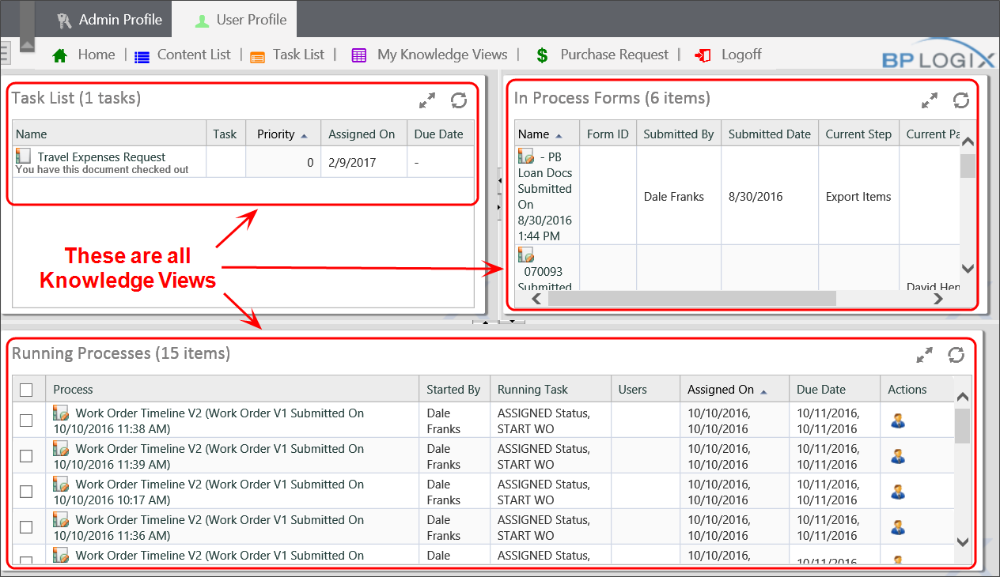
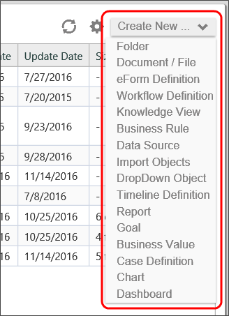
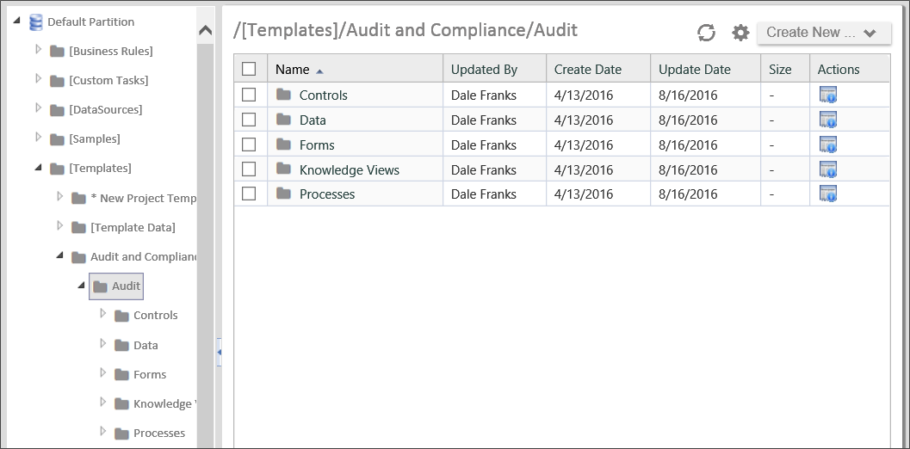

|
|
Lesson Contents | In this Lesson, you will learn the basics of the Process Director user interface. |
Process Director’s web interface provides a navigation system at the top of the browser, containing entries that will take users into various components of Process Director. After the initial installation of Process Director you will see a very simple navigation scheme displayed.

A workspace is a user-defined section of the Process Director interface where related tasks or functions can be grouped. The navigation scheme is separated into two workspaces: the Admin Profile workspace and the User profile workspace.
In the default installation, the Admin Profile workspace provides administrative users with buttons that enable the user to navigate to the various user and system administrative functions. The User Profile workspace enables access to the user's task list and standard Knowledge Views.
The basic navigation scheme will be expanded through creating new workspaces for different users in the administration section of the Process Director interface. Throughout this guide, you may see screenshots from various installations that have a number of different workspace navigation schemes. The navigation schemes for your particular installation will be quite different once you start implementing the workspaces that are relevant to your processes.
All content in Process Director is viewed through the use of Knowledge Views, which define what data in the repository should be displayed. The navigation system also is used to view the Content List, which is available only to users that have been authenticated with the system. Anonymous users will have access only to specific Knowledge Views, documents and Forms with the appropriate permission.

To refresh any of the pages, in the Content List use the refresh icon on the upper right corner of the navigation browser. Do not use the browser’s default refresh button (e.g., F5 Refresh ), which will return you to the Home Page.
Use the properties Icon in the upper right corner of the navigation browser to open the properties page for the current folder.
Use the separator icon located in the vertical bar separating the navigation and content portlets to minimize or maximize the navigation portlet. To restore (redisplay) the navigation bar, click on the same icon.
When you select a workspace, a menu bar will appear below the workspace that displays the different functions that are accessible in each workspace. Figure 1, above, shows the menu bar that is available in the Admin Profile workspace.
Each menu item will, when clicked, direct you to a different screen in the workspace. Each screen may consist of one of the following items:
The Content List displays all of the folders and files that are created in Process Director, or uploaded into Process Director as content. The Content List is a hierarchical list of all Process Director objects. The Content List includes all of the objects created in Process Director, such as Forms, Process Timelines, Knowledge Views, etc. In addition, the Content List can include uploaded files such as Excel spreadsheets used to import data, Word documents used as templates for output documents, and other files that become part of a process definition.
The Content List consists of a file structure that is located on the left side of the screen, and a file listing that is displayed on the right side of the screen. Navigation through the Content List is done by clicking on a folder on either side of the screen.
Many users think of the Content List as a file system that users can create inside of Process Director, but this isn't really correct. The content list organizes Process Director objects in a logical fashion for users who are browsing through the system, but the actual objects in Process Director are not really organized in the way that the Content List displays.
For instance, in a file system, the file name is the key element for identifying a file. Let's say you have a word document named "sample.docx", and you change the name to "NewSample.docx". If you go into Microsoft Word, and try to open the "sample.docx" file from the list of recent files, you will receive a message telling you that the file can't be found. Changing the name of the file changes the identity of the file on your computer, making any references to the old file name invalid.
In Process Director, on the other hand, an object's name doesn't affect the identity of the object. Process Director tracks objects by a unique ID that you, as an end user will rarely, if ever, use. The object name is merely an attribute of the object that you can change at will without Process Director losing track of the object.
Here's an example that demonstrates how object tracking works in Process Director. In this example, you have a business rule named "My Business Rule" and an Form named "My Form".

The Form references the Business Rule to determine when to enable the fields on the Form, as shown below.

Change the name of the Business Rule to "My Original Business Rule".

Now, create a new Business Rule named "My Business Rule". This is the same name as the original business rule.

Note that, even though you have a business rule with the name "My Business Rule", Process Director does not use it as the business rule on the Form. Instead, Process Director has updated the Form definition to show the new name you gave to the original Business Rule.

By the way, you can see the ID that Process Director uses to identify an object by opening the object definition. On an Form, for example, at the bottom of the Form definition screen, you'll see the property for the Form URL, written in a format similar to:
http://Servername/form.aspx?pid=dc1c51ea-612e-48c0-8cc6-4ff9276cbfc9&formid=aa213c6f-a8aa-454f-a04d-30b56fd2e493
The "formid" URL parameter contains the ID that Process Director uses to uniquely identify the Form object, which, in this example, is
aa213c6f-a8aa-454f-a04d-30b56fd2e493
Changing the name of the Form, or any other property, does not change this ID. So, you can identify the Form with a name that is easily readable by humans, while Process Director identifies the Form with this ID, which is easily readable by computers.
All objects are created from the Content List. A Create New dropdown menu is located at the top right of the Content List. This dropdown menu contains all of the process Director objects you can create. To create a new object, simply select the desired object from the dropdown menu.

When you select the desired object, Process Director will immediately display a Create New Object screen, that will display the Name and Description properties for the object.

The Name property is mandatory, while the Description property is optional. Once you have given the object a Name, you can click the OK button to save the Name and create the new object. If you have configured the Description property, the object's description will appear on the second line of the Content List where the object appears.

The following Content List objects are available in Process Director.
|
CONTENT LIST OBJECT |
DESCRIPTION |
|---|---|
|
Folder |
The folder is the container for all other Content List objects. |
|
Document/File |
The Content List placeholder for documents that you upload to process director for use as part of a process definition. |
|
Form Definition |
The definition of an electronic form. It stores the Form template, the fields that are created in the template, the user-defined events that are initiated while using the Form, and the validation rules for determining if the information provided in an Form is valid when submitted. |
|
Workflow Definition |
A process model that implements the traditional, flowchart-based method of modeling processes. |
|
Knowledge View |
The definition of a view of the process and/or Form data, containing user-defined fields for display in a tabular format. |
|
Business Rule |
The definition for an object that encapsulates a key decision or value used in a business process. |
|
Data Source |
An object that accesses information found in a database. |
|
Import Objects |
Implements a process to import an XML file containing an exported set of Process Director objects. |
|
DropDown Object |
The definition of labels and values that will be applied to a dropdown control on an Form. |
|
Timeline Definition |
A process model that implements the patented BP Logix method of implementing a time-based method of modeling processes. |
|
Report |
The definition of a report object that uses the advanced reporting tool. The advanced reporting tool is available to users of cloud-based installations, and on-premise installations that explicitly include the Advanced Reporting module. |
| Goal | The Goal object creates a scheduled evaluation of conditions, and, based on the evaluation, sets a global system state and/or automatically starts a process. |
| Business Value | The Business Value is an object that provides data virtualization for any accessible external data. |
| Case Definition | The Case definition stores the properties/attributes for a Case Management process. The Properties can be shared across the multiple Forms and processes that might be part of a Case. |
| Chart | The Chart provides a graphical representation for any accessible data. |
| Dashboard | The Dashboard object provides a way to display many different Process Director objects in a single interface. |
In general, Content List objects are sorted into folders, much like files in your computer's file system. There is no hard and fast method of organizing the folders, except that folders and subfolders should be organized logically. For instance, one possible method of organizing folders is shown below.

In this particular organization scheme, you can see that the folders on the left side of the screen are grouped into business functions such as Audit and Compliance and Document Review & Approval. In the Document Review & Approval folder, you can see the folders are further subdivided into Asset Management and Contract Management. The Asset Management folder is selected, so the Content List on the right side of the example shows all of the objects in the Asset Management folder.
The Asset management folder is organized with subfolders to store Business Rules, Forms, KViews (Knowledge Views), etc. The folder also contains the primary Form, entitled Asset Management, for the process.
You do not, of course, have to copy this particular method of organization, but you should, as a best practice, define some standard method of organizing your Content List so that all implementers are familiar with how a process should be organized. Another general rule of organization—and implementation in general—is that you should use the fewest number of objects necessary to model and automate your processes.
The Content list portlet on the right side of the screen is sortable by column. To sort the items displayed in the Content List, click on the column name. To change the sort from ascending to descending, click on the column name a second time. A small arrow icon will appear next to the column name to show whether you are sorting the column in ascending or descending order.

Each time you click on the column header, the sorting function will occur automatically.
On the left side of each object in the content list is a check box that can be checked to select one or more objects. When you check one or more of these check boxes, a series of Action Links will appear at the top of the content list that enable you to copy, move, etc. the checked objects.

The following action links are available.
Clicking the move link will enable you to move the object, along with its complete configuration, to another location in the Content List. When you click the Move action link, a new set of actions links will appear.

Simply navigate to the folder into which you'd like to place the object and click the Move Here link to place the moved object into the desired location. Process Director will move the object from its original location to the new location you have selected. You can cancel the move at any time by clicking the Cancel Move link.
Clicking the Copy link will copy the basic object definition but not any of the configured custom task event mappings. Just as with the Move link, clicking the Copy link will cause process Director to present you with a new set of Action links.

Simply navigate to the folder into which you'd like to place the object and click the Copy Here link to place the copied object into the desired location. Process Director will copy the object from its original location and place the copy in the new location you have selected, while leaving the original copy in its place. You can cancel the copy at any time by clicking the Cancel Copy link.
When you click the Delete link, a confirmation dialog box will be displayed to enable you to confirm that you wish to delete the object. Clicking the OK button on the confirmation dialog box will immediately delete the object.
 When you delete a definition object, like an Form or Process Timeline definition, all of the instances of that object will also be completely removed from the system.
When you delete a definition object, like an Form or Process Timeline definition, all of the instances of that object will also be completely removed from the system.Clicking the export link will start the process of exporting the content object. If you have selected a folder to export, all of the folder's contents will be exported, and the folder/subfolder hierarchy will be exported exactly as it appears in the content list. See the Importing/Exporting Objects topic for more information about this process.
Clicking this link will open the properties screen for the selected object. This option will only appear if a single item is selected in the content list.
Clicking this link will run the object, i.e., will open an Form for editing, or start a process. This option will only appear if a single item is selected in the content list, and will start a specific action, depending on the object type, as shown below.
|
OBJECT TYPE |
ACTION |
|---|---|
|
Form Definition |
Open a new instance of that form. |
|
Process Definition |
Launch a new instance of that process |
|
Knowledge View, Dashboard, etc. |
Opens the object in display mode. |
Clicking this option will cancel a running process.
Folders provide a hierarchical structure to content in the database. The system supports folders and sub-folders. Each folder can contain any number of objects or sub-folders. A folder can have any name and may contain an optional description. Folders provide the organizational foundation for your data. They can be used to group related items according to Process Timelines, or structured according to user roles.
To create a new folder, use the Create New dropdown in the content list and choose the Folder menu item. A user must have Modify permission to the parent folder to create a folder. If a user does not have the appropriate permission, the dropdown will not appear.

Process Director securely stores your documents and files. As an electronic document management system (EDMS), it can store any type of document or file in their native formats. Any file type can be uploaded and managed by the server, including file types such as .PDF, .TXT, .GIF, .JPG, .DOC, .DOCX, .XLS, .XLSX, .PPT, .PPTX, .BMP, .PNG, .ICO, .EPS, .AI, and .TIFF to name a few. Process Director can convert documents or files to a PDF or HTML format; while still maintaining the native file format in the database. Process Director does not provide the document authoring tools; instead it utilizes the native authoring tools you are currently using to create and view your files. The type of document can be viewed by clicking on the item in the content list. The native viewer for the specific document type will be used.
Documents are added to Process Director database by uploading them from your PC. To add a new document, navigate to the appropriate folder on Process Director where the document should be added. Select the Create New dropdown and choose the Document / File entry. A user must have Modify permission to the parent folder to add the new document. If a user does not have the appropriate permission, the Create New dropdown will not appear.
The optional BP Logix Plug-in makes uploading documents easier and is also needed to have the ability to do a “Check Out and Edit” of the document allowing it to automatically open in the editor specified for that file type. For more information about the BP Logix Plug-in and why you would want to provide this to your users, refer to the chapter named BP Logix Plug-in in this document.
The BP Logix Plug-in makes the process of uploading and/or creating documents easier. When uploading a document with the BP Logix Plug-in installed, a button labeled Check Out and Edit will display which will open the editor associated with that file.

The BP Logix Plug-in is not required to upload documents. You will notice on the following screen that the Check Out and Edit button is not displayed. This will happen when adding a new document without the BP Logix plug-in.

Process Director supports the ability for users to search through the entire database for any object type using a Knowledge View. The list of objects returned that match the search request will be limited to only those that the user has View permission to.
Searches may be case sensitive. This is determined by your database in use. If you are using SQL Server, the default is case insensitive. If you are using Oracle, the default is case sensitive.
There is an optional search feature called FTS (full-text search). This enables users to search the actual contents of a document for the existence of a word. This support requires SQL Server with FTS enabled. For information on how to enable the full-text indexing on SQL Server, please refer to the Full-Text Search topic in the Administrator's Guide.
Process Director allows you to control a user’s permission to create content in a folder. It also allows you to determine what type of objects or content can be created. You may only want certain types of users to be able to create objects like workflow definitions and Form definitions. See the Permissions topic for detailed information on how to set permissions.